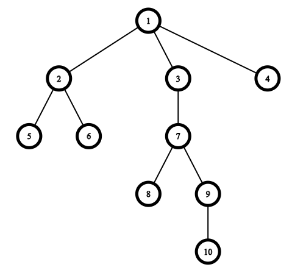

CF 1328E Tree Queries [ LCA DFS ]
题意： 给出树上的一些点，判断这些点中某些是否可以连成一条到根的路径，并且剩余的点到这条路径的距离为 1 . 原文：
You are given m queries. The i-th query consists of the set of ki distinct vertices vi[1],vi[2],…,vi[ki]. Your task is to say if there is a path from the root to some vertex u such that each of the given k vertices is either belongs to this path or has the distance 1 to some vertex of this path.
Example
input
1 | 10 6 |
output
1 | YES |

思路一：选出深度最深的点 v ，显然所有的点要么属于 v 到根节点的路径，要么到这条路径的距离为 1. 可以先找出这条路径，在这条路径上的点去除; 对于剩下的点 ki ,求 ki ，v 的最近公共祖先 u, 如果 ki 到 u 的距离 = 1，那么这点是符合的，依次判断。
思路二：（膜大佬代码orz）同思路一用 lca ,但是不求路径。对于所有的 ki , 根据深度排序。如果要符合题目要求，相邻的 ki, kj 的 lca 只能为 ki ,kj, ki 的父节点，kj 的父节点四种情况之一。否则就不符合。
思路三： (官方题解) 因为不在路径（最深的点到根节点的路径）上的点到路径上的距离只能等于 1， 所以如果这样的点直接用它的父节点替代，然后再判断所有点是否都在路径上即可。
如何判断所有的点是否都在一条路径上？
路径上相邻的点 u,v , lca(u ,v) = u or v ,(有点像思路一)
跑一边 dfs 记录所有点第一次访问的时间 tin, 和最后一次访问的时间 tout ,
如果 $tin_v≤tin_u ,tout_u≤tout_v $ u 是 v 的祖先节点。如果所有的点都是最深的节点的父节点，那么所有点都在一条路径上 。
1 | const int MAX=200000+10; |
1 | //题解代码 |